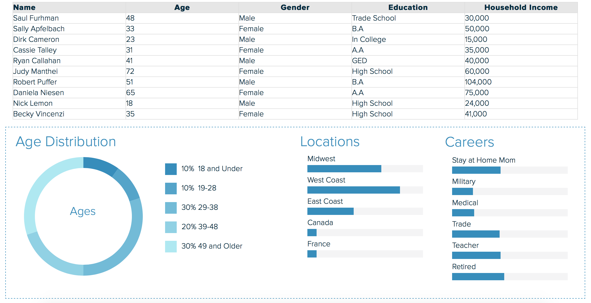
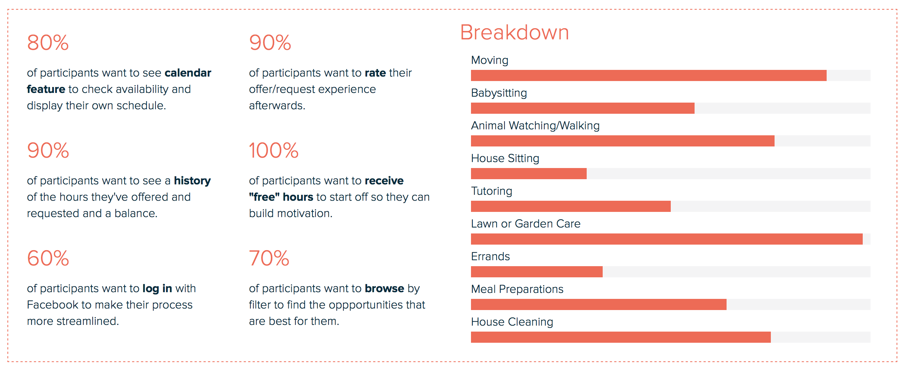
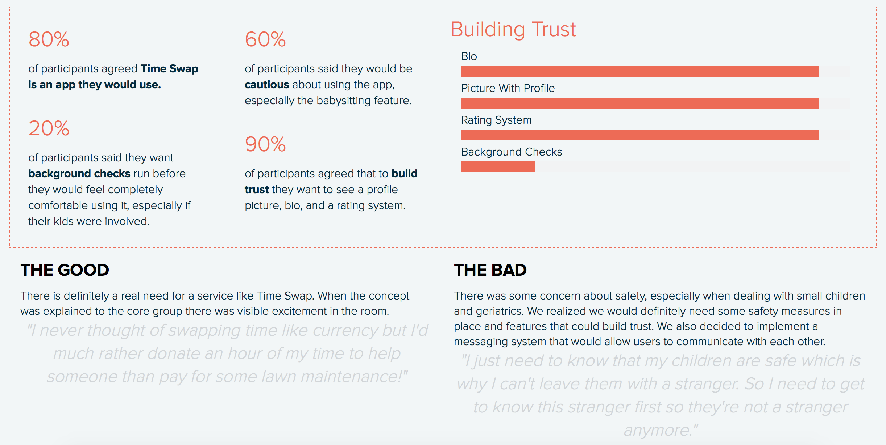
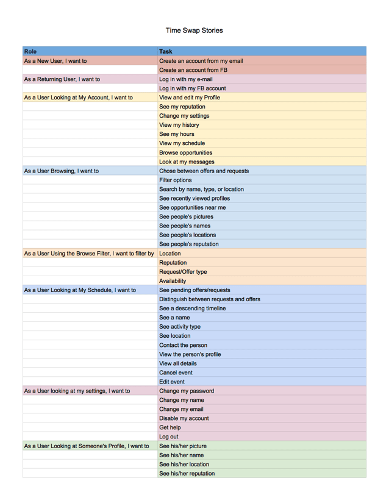
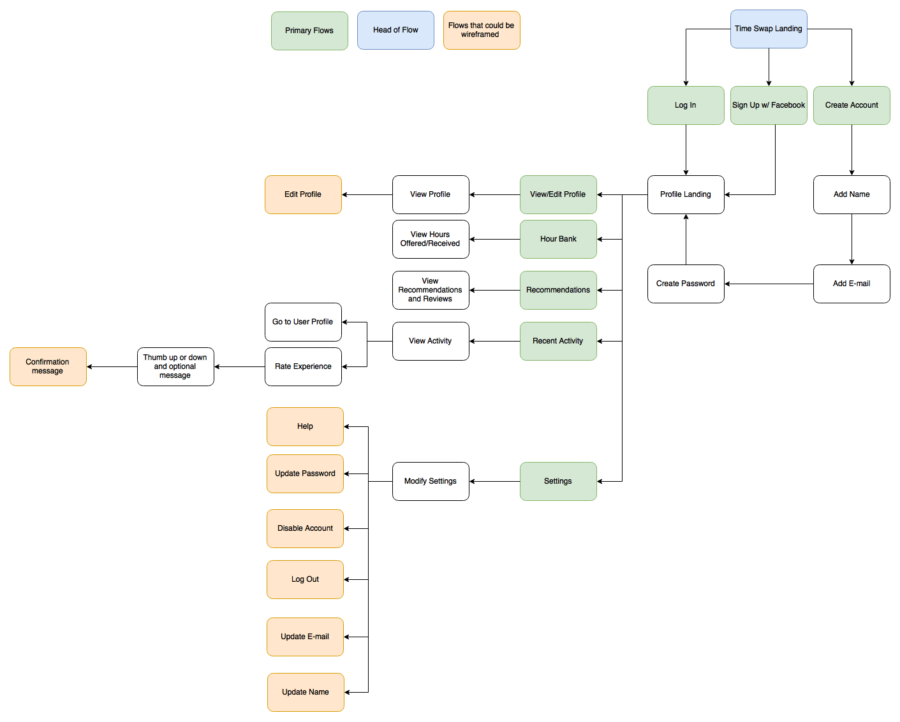
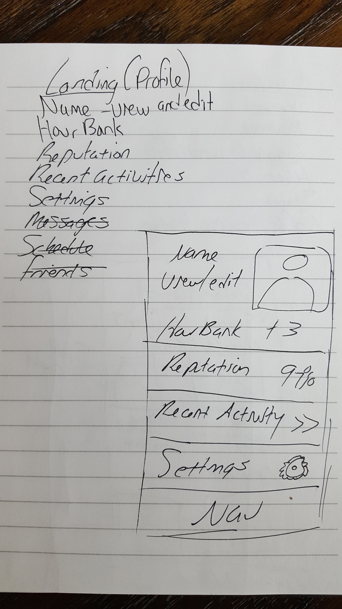
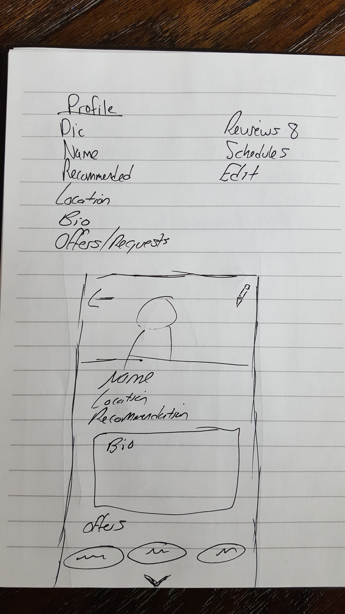
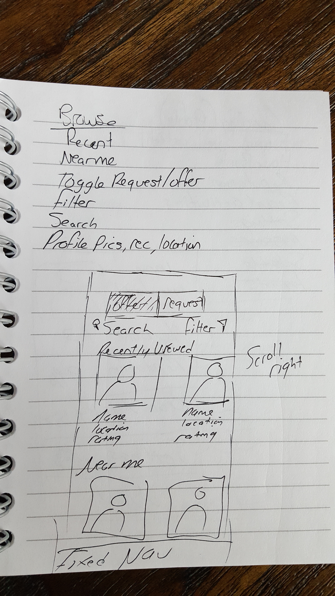

Time Swap is a startup based in Malaysia that wants to disrupt the marketplace by allowing people to exchange time rather than money. I was honored to be brought on board, especially since money is a representation of labor time, and I thought it was pretty cool to use technology to bypass social conventions and get back to the basic nature of exchange. EXPLORE TIME SWAP.
The problem I was commissioned to solve was that of making a vision into a tangible reality. The startup knew what they wanted to accomplish: making an easy-to-use marketplace to allow people to exchange time. Yet they didn't know how this would work in practice. It was my role to visualize this marketplace in a user-friendly way. My solution was to step into the user's shoes to create a story that users would materialize. From there I would develop user flows, wireframes, mockups, and finally a prototype for Time Swap to show off to investors.
I needed to define my audience. Who is the protagonist of this story? Interviews and surveys gave me the materials to build personas. These personalities afforded me the relationships and expectations that would act as glue for user flows and site maps.
The primary aim of my survey was to define the app's users in terms of demographics, objectives, and method of trust building.
Primary Users: Mothers and Seniors
Primary Objectives: Moving, Yard Work, and Animal Care
Trust Building: Bio, Pictures, Ratings
I developed personas from this data to help visualize the app's protagonists. From now on, any design direction would be framed by looking at these personas and asking, "does it match their needs and expectations?".
How would my protagonists get to their goals? A site map helped me to get a feel of the movement of the user and how I could abstractly make it a smooth experience.
User Stories of the App's Experience
Potential Flows from the Landing
With the research foundations laid, I now set out to visualize the environment the users would inhabit. I started with free-hand sketches, then moved to wireframes, and finally high fideity mockups.
Landing Page's Features and Layout

The user's personal profile page needed special attention since it would act as a platform to base the profile pages of other users.
Landing Page's Features and Layout
Browsing also took on special importance concerning user-friendliness. To filter intuitively took a few iterations.
Information Hiearchy and Packaging was Paramount
Taking off the user's shoes, I put on my designer hat, stood back, and asked if I met the objective? Could this app disrupt a market? Maybe. Could it give investors the visual captial of an app that was both functional and friendly to use? Most definetely. The basic stories and flow were fleshed out and could be used as a platform to construct a fully-functional, market-disrupting app. Along the way, this project taught me the importance of staying true to the user and their story. If that relationship remains pure throughout a project, then any market can be disrupted.